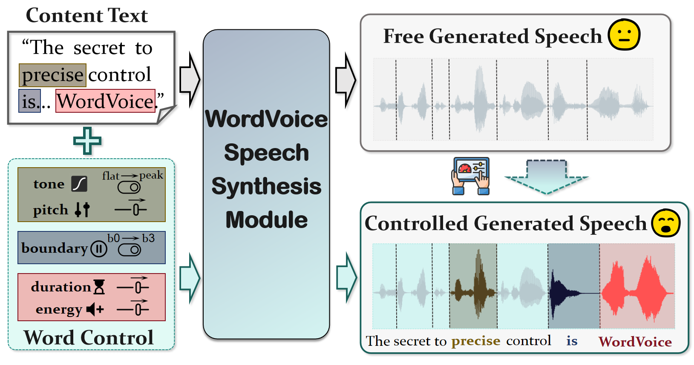
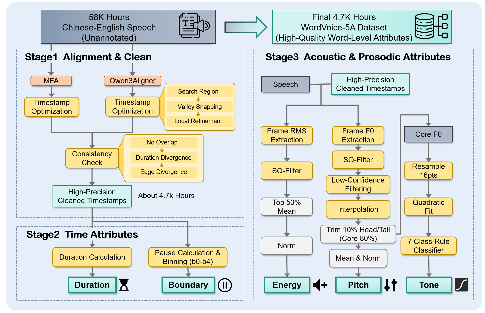
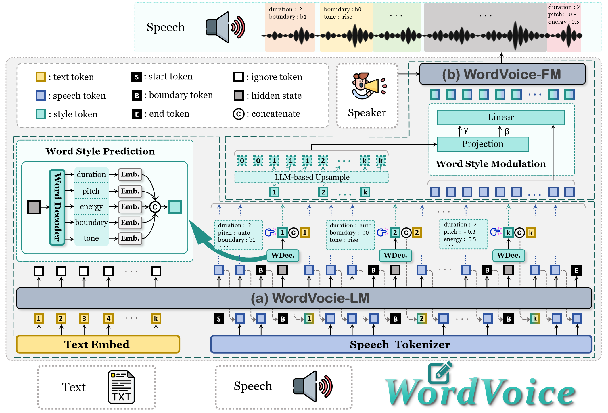

WordVoice: Explicit and Decoupled Multi-Dimensional
Word-Level Control for LLM-Based Text-to-Speech
WordVoice: 基于大语言模型的高精度、多维度字级解耦控制语音合成
Word-Level Control for LLM-Based Text-to-Speech
Abstract 摘要
While recent LLM-based TTS systems have achieved remarkable naturalness, they predominantly rely on implicit end-to-end generation paradigms, resulting in coarse-grained control. To address this, we propose WordVoice, a comprehensive solution for highly precise word-level control. First, we construct WordVoice-5A, a massive 4.7k-hour bilingual dataset featuring five-dimensional word-level annotations (duration, boundary, energy, pitch, and tone). Second, we pioneer a bound-token mechanism within the LLM to enable adaptive multi-task prosodic planning and flexible manual intervention. Furthermore, we augment the token-to-waveform stage with a fine-grained acoustic modulation module. Experiments demonstrate that WordVoice achieves superior, decoupled control over multiple acoustic dimensions while maintaining competitive zero-shot synthesis stability.
尽管近期基于大语言模型（LLM）的语音合成系统在自然度上取得了显著进展，但它们主要依赖隐式的端到端生成范式，导致控制粒度较粗。为了解决这一问题，我们提出了 WordVoice，一个实现高精度字级控制的综合解决方案。首先，我们构建了 WordVoice-5A，这是一个包含 4700 小时双语数据的大规模数据集，具有五个维度的字级标注（时长、边界、能量、音高和音调）。其次，我们在 LLM 中首创了边界符（bound-token）机制，以实现自适应的多任务韵律规划和灵活的人工干预。此外，我们在声学解码阶段引入了细粒度的声学调制模块。实验表明，WordVoice 在实现多声学维度解耦控制的同时，保持了极具竞争力的零样本合成稳定性。
1. Model Architecture & Pipeline
1. 模型架构与数据处理流程



2. Oracle Prosody Reconstruction (GT Attribute Control)
2. 真实韵律重构 (基于 Ground Truth 属性控制)
Sample 1 (Chinese)示例 1 (中文)
📝 Text:📝 文本: "确实因为哎呦，我就现在想吐槽这个北京地铁就设计这这个人。"
| Ground Truth Audio真实参考音频 | CosyVoice3 (Free Gen)CosyVoice3 (自由合成) | WordVoice (with GT Attrs)WordVoice (使用真实属性) |
|---|---|---|
Sample 2 (Chinese)示例 2 (中文)
📝 Text:📝 文本: "这是我当时幻想的，我希望我的未来的另一半是浓眉大眼，高鼻梁。第四个呢，第四个。"
| Ground Truth Audio真实参考音频 | CosyVoice3 (Free Gen)CosyVoice3 (自由合成) | WordVoice (with GT Attrs)WordVoice (使用真实属性) |
|---|---|---|
Sample 3 (English)示例 3 (英文)
📝 Text:📝 文本: "Spent my twenties going like back and forth between I'm drinking, I'm not drinking, I'm drinking, I'm not drinking. But the not drinking was always."
| Ground Truth Audio真实参考音频 | CosyVoice3 (Free Gen)CosyVoice3 (自由合成) | WordVoice (with GT Attrs)WordVoice (使用真实属性) |
|---|---|---|
Sample 4 (English)示例 4 (英文)
📝 Text:📝 文本: "Your beer doesn't taste like mushrooms, but they can help keep your mind and body in good form. So the trend that we're talking about here is adaptogenic or functional mushrooms."
| Ground Truth Audio真实参考音频 | CosyVoice3 (Free Gen)CosyVoice3 (自由合成) | WordVoice (with GT Attrs)WordVoice (使用真实属性) |
|---|---|---|
3. Zero-Shot Quality & Stability (Free Mode vs. Baseline)
3. 零样本生成质量与稳定性 (自由模式 vs. 基线模型)
Sample 1 (Chinese Long Utterance)示例 1 (中文长句)
📝 Target Text:📝 目标文本: "板凳宽，扁担长，板凳比扁担宽，扁担比板凳长，扁担要绑在板凳上，板凳不让扁担绑在板凳上，扁担偏要板凳让扁担绑在板凳上。"
| Prompt Audio提示音频 | CosyVoice3 (Baseline)CosyVoice3 (基线模型) | WordVoice-Free (Ours)WordVoice-Free (我们的) |
|---|---|---|
Sample 2 (Chinese Long Utterance)示例 2 (中文长句)
📝 Target Text:📝 目标文本: "吕小绿家养了红鲤鱼绿鲤鱼和驴。李小莉家养了红驴绿驴和鲤鱼。吕小绿家的红鲤鱼绿鲤鱼和驴要跟李小莉家的红驴绿驴和鲤鱼比一比谁更红谁更绿。吕小绿说他家的绿鲤鱼比李小莉家的绿驴绿，李小莉说她家的绿驴比吕小绿家的绿鲤鱼绿。"
| Prompt Audio提示音频 | CosyVoice3 (Baseline)CosyVoice3 (基线模型) | WordVoice-Free (Ours)WordVoice-Free (我们的) |
|---|---|---|
Sample 3 (English Long Utterance)示例 3 (英文长句)
📝 Target Text:📝 目标文本: "Peter Piper picked a peck of pickled peppers. A peck of pickled peppers Peter Piper picked. If Peter Piper picked a peck of pickled peppers, where’s the peck of pickled peppers Peter Piper picked?"
| Prompt Audio提示音频 | CosyVoice3 (Baseline)CosyVoice3 (基线模型) | WordVoice-Free (Ours)WordVoice-Free (我们的) |
|---|---|---|
Sample 4 (English Long Utterance)示例 4 (英文长句)
📝 Target Text:📝 目标文本: "Whether the weather be fine or whether the weather be not. Whether the weather be cold or whether the weather be hot. We'll weather the weather whether we like it or not."
| Prompt Audio提示音频 | CosyVoice3 (Baseline)CosyVoice3 (基线模型) | WordVoice-Free (Ours)WordVoice-Free (我们的) |
|---|---|---|
4. Single-Word Control Scenario
4. 单字控制场景
Sample 1 (Chinese)示例 1 (中文)
🗣️ Base (Free Mode):🗣️ 基础生成 (自由模式): "刚才那种情况大家都不知道该怎么办，结果你三两下就找到了解决办法，太厉害了!"
🎬 Intervention:🎬 人工干预: "刚才那种情况大家都不知道该怎么办，结果你三两下就找到了解决办法，太[Dur: ↑↑][Eng: ↑↑] 厉害了!"
| WordVoice-FreeWordVoice-Free | WordVoice-ControlWordVoice-Control |
|---|---|
Sample 2 (Chinese)示例 2 (中文)
🗣️ Base (Free Mode):🗣️ 基础生成 (自由模式): "把班上好，把觉睡好，把日子过好，比什么都重要。"
🎬 Intervention:🎬 人工干预: "把班上好，把觉睡好，把日子过好，比 什[Dur: ↑↑][Eng: ↑↑][Ton: flat->peak] 么都重要。"
| WordVoice-FreeWordVoice-Free | WordVoice-ControlWordVoice-Control |
|---|---|
Sample 3 (English)示例 3 (英文)
🗣️ Base (Free Mode):🗣️ 基础生成 (自由模式): "I thought you said this would be easy."
🎬 Intervention:🎬 人工干预: "I thought you said this would be easy[Eng: ↑↑][Ton: peak->strong rise]."
| WordVoice-FreeWordVoice-Free | WordVoice-ControlWordVoice-Control |
|---|---|
Sample 4 (English)示例 4 (英文)
🗣️ Base (Free Mode):🗣️ 基础生成 (自由模式): "Well, that was a brilliant idea."
🎬 Intervention:🎬 人工干预: "Well, that was a brilliant[Eng: ↑↑][Pit: ↑↑][Ton: strong fall->peak] idea."
| WordVoice-FreeWordVoice-Free | WordVoice-ControlWordVoice-Control |
|---|---|
5. Complex Dramatic Control (Multi-Word Scenario)
5. 复杂的戏剧性控制 (多字控制场景)
Sample 1 (Chinese)示例 1 (中文)
🗣️ Base (Free Mode):🗣️ 基础生成 (自由模式): "我绝对不会同意的，你疯了吗？"
🎬 Intervention:🎬 人工干预: "我 绝[Eng: ↑↑][Pit: ↑↑] 对[Dur: ↑↑][Eng: ↑↑][Pit: ↑↑][Bnd: b0->b1] 不会同意的，你 疯[Pit: ↓↓][Eng: ↑↑][Bnd: b0->b1] 了吗？"
| WordVoice-FreeWordVoice-Free | WordVoice-ControlWordVoice-Control |
|---|---|
Sample 2 (Chinese)示例 2 (中文)
🗣️ Base (Free Mode):🗣️ 基础生成 (自由模式): "等一下，前面好像有声音，快躲起来！"
🎬 Intervention:🎬 人工干预: "等一 下[Dur: ↓↓][Ton: flat->rise]，前面好像有声 音[Dur: ↓↓][Eng: ↓↓]，快[Eng: ↑↑] 躲起 来[Ton: flat->strong rise]！"
| WordVoice-FreeWordVoice-Free | WordVoice-ControlWordVoice-Control |
|---|---|
Sample 3 (English)示例 3 (英文)
🗣️ Base (Free Mode):🗣️ 基础生成 (自由模式): "I will never agree to this, are you crazy?"
🎬 Intervention:🎬 人工干预: "I will never[Pit: ↑↑][Ton: peak->strong fall] agree to this, are[Pit: ↑↑] you crazy[Eng: ↑↑] ?"
| WordVoice-FreeWordVoice-Free | WordVoice-ControlWordVoice-Control |
|---|---|
Sample 4 (English)示例 4 (英文)
🗣️ Base (Free Mode):🗣️ 基础生成 (自由模式): "Wait a minute, I hear something, hide!"
🎬 Intervention:🎬 人工干预: "Wait[Dur: ↑↑][Bnd: b0->b2] a minute, I hear something[Bnd: b2->b4], hide[Eng: ↑↑][Pit: ↑↑]!"
| WordVoice-FreeWordVoice-Free | WordVoice-ControlWordVoice-Control |
|---|---|